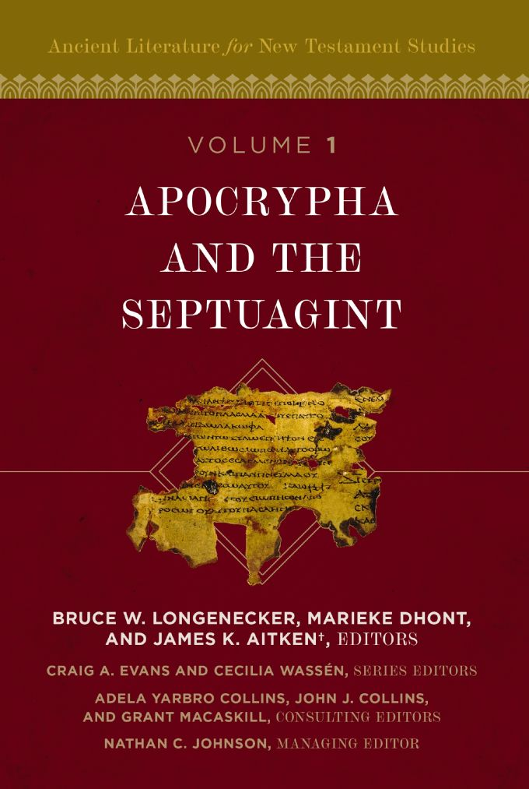

Apocrypha and the Septuagint
Zondervan Academic · Biblical Studies · Hardcover
Released August 11, 2026 · ISBN 9780310495529
From the publisher
To understand the New Testament well, it is important to study the larger world surrounding it. This volume explores two vital strands of ancient Jewish literature: the Jewish Apocrypha and the Septuagint (the Old Greek translations of the Hebrew Bible). These text-collections reveal the rich and dynamic Jewish environments in which early devotion to Jesus Christ first emerged.
Intriguing on their own, these collections also backlight the life of Jesus and the faith of his earliest followers, adding contours of depth to the writings of the New Testament in relation to the Jewish matrix of their time. Each treatment addresses introductory matters, provenance, a summary of content, interpretive issues, key passages for New Testament study and their significance, and a select bibliography.
Description adapted from Zondervan Academic.
About the series
Ancient Literature for New Testament Studies (ALNTS) is a 10-volume series that introduces the key ancient texts forming the cultural, historical, and literary context of the New Testament — the library a serious reader of the New Testament wishes they had at hand.
- 1.Apocrypha and the Septuagint You're here
Longenecker, Dhont & Aitken - 2.The Old Testament Pseudepigrapha
Loren T. Stuckenbruck - 3.The Dead Sea Scrolls
Cecilia Wassén - 4.The Apostolic Fathers
Paul Foster - 5.Philo and Josephus
Chapman, Rodgers & Rogers - 6.Greco-Roman Literature
Sanzo and others - 7.Targums and Rabbinic Literature
Chilton & Avery-Peck - 9.Early New Testament Apocrypha
J. Christopher Edwards - 10.Inscriptions, Papyri, and Other Artifacts
Harrison & Richards
Series editors: Craig A. Evans & Cecilia Wassén. Published volumes link to their product pages; forthcoming volumes link to a search so you can find them once released. Numbering and availability per Zondervan Academic.
← Back to the calendar Get the weekly email
Disclosure: Pulpit & Page may earn a commission from purchases made through our links, at no extra cost to you.